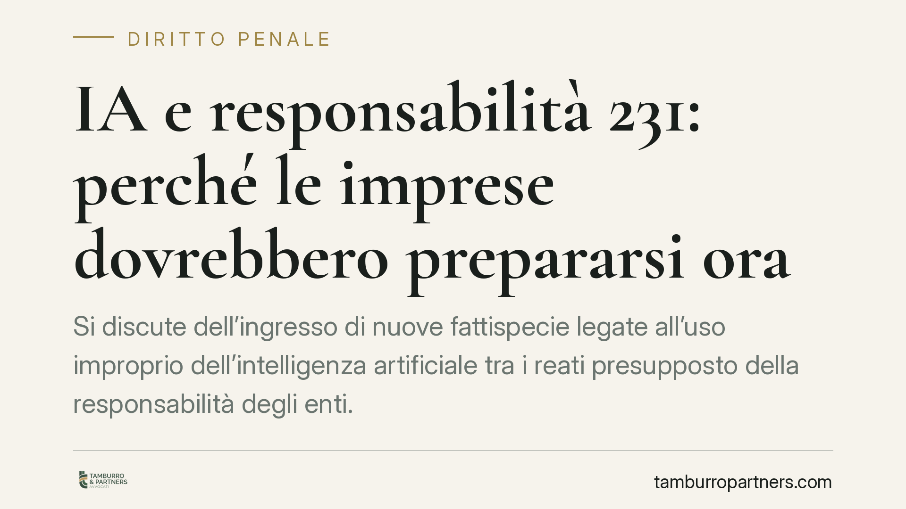

IA e responsabilità 231: perché le imprese dovrebbero prepararsi ora
Si discute dell'ingresso di nuove fattispecie legate all'uso improprio dell'intelligenza artificiale tra i reati presupposto della responsabilità degli enti. L'ampliamento non è ad oggi confermato da una norma vigente, ma il tema impone già alle imprese una riflessione sui modelli organizzativi: anticipare la verifica dei rischi IA-correlati è una scelta prudente, non un obbligo da rincorrere.

Il contesto
La diffusione di sistemi di intelligenza artificiale nei processi aziendali apre un interrogativo concreto: come si colloca l'uso di questi strumenti rispetto alla responsabilità amministrativa degli enti disciplinata dal D.lgs. 231/2001?
Il dibattito nasce dall'ipotesi che condotte realizzate tramite l'IA possano confluire tra i cosiddetti reati presupposto, quelli cioè che, se commessi nell'interesse o a vantaggio dell'ente, ne fondano la responsabilità. Occorre però una premessa di metodo: allo stato, nessuna norma vigente ha introdotto nuovi reati presupposto specificamente dedicati all'intelligenza artificiale. Per questa ragione evitiamo di indicare numeri di articolo non confermati e ragioniamo sul meccanismo, non su fattispecie ipotetiche.
Inquadramento normativo
Il sistema 231 si regge su un principio di tassatività. L'ente risponde solo per i reati espressamente elencati negli artt. 24 e seguenti del D.lgs. 231/2001. Nessun reato entra nel catalogo per via interpretativa o analogica: serve una norma espressa che lo richiami. Questo vale anche per le condotte IA-mediate. Finché il legislatore non interviene con una previsione puntuale, l'intelligenza artificiale non amplia di per sé il perimetro della responsabilità dell'ente.
Ciò non significa che l'IA sia oggi irrilevante. Alcune fattispecie già presenti nel catalogo possono essere integrate da condotte realizzate con strumenti di intelligenza artificiale. È il caso dei delitti informatici e del trattamento illecito di dati richiamati dall'art. 24-bis: un sistema IA usato per accessi abusivi, manipolazione di dati o frodi informatiche rientra in ipotesi già sanzionabili. Lo stesso ragionamento vale per altri ambiti del catalogo, dalla corruzione agli illeciti in materia di proprietà industriale. L'IA, in questi casi, è il mezzo, non un nuovo reato.
Sul piano della prevenzione, l'art. 6 del decreto riconosce efficacia esimente al modello di organizzazione, gestione e controllo (MOG) adottato ed efficacemente attuato prima della commissione del reato, unitamente all'istituzione di un Organismo di Vigilanza (OdV) dotato di autonomi poteri di iniziativa e controllo.
Implicazioni pratiche
Il punto che interessa l'impresa è la valutazione giudiziale di idoneità del modello. Il giudice non si limita a verificare l'esistenza formale del MOG: ne valuta l'idoneità in concreto, attraverso una prognosi postuma. Si colloca cioè nel momento anteriore al fatto e si chiede se quel modello, così come costruito, fosse ragionevolmente capace di prevenire reati del tipo di quello verificatosi.
Qui l'intelligenza artificiale assume rilievo immediato, a prescindere da futuri ampliamenti del catalogo. Un modello che ignora del tutto i rischi connessi all'uso di sistemi IA — tracciabilità delle decisioni automatizzate, gestione dei dati, controllo sugli output, supervisione umana — rischia di apparire inadeguato proprio sul terreno più nuovo dell'attività d'impresa.
L'assenza di una prognosi favorevole è ciò che espone l'ente alla sanzione. Per questo la revisione dei modelli alla luce dell'uso dell'IA ha senso già oggi, indipendentemente dall'eventuale introduzione di nuove fattispecie.
Cosa fare in concreto
- Mappate i processi IA: individuate dove e come i sistemi di intelligenza artificiale intervengono nei processi aziendali e quali reati già presenti nel catalogo 231 potrebbero esservi connessi.
- Aggiornate l'analisi dei rischi: integrate la valutazione dei rischi 231 con le condotte IA-mediate, a partire dai delitti informatici ex art. 24-bis.
- Introducete presidi specifici: prevedete procedure su tracciabilità delle decisioni automatizzate, supervisione umana, qualità dei dati e controllo degli output.
- Coinvolgete l'OdV: assegnate all'Organismo di Vigilanza il monitoraggio dei sistemi IA e definite flussi informativi dedicati.
- Monitorate l'evoluzione normativa: predisponete un presidio che consenta di adeguare tempestivamente il modello se e quando saranno introdotte nuove fattispecie presupposto.
La logica resta quella del sistema 231: non la mera adozione formale di un documento, ma la costruzione di un modello che il giudice possa ritenere, in concreto e con prognosi postuma, idoneo a prevenire i reati rilevanti. Prepararsi per tempo è il modo migliore per presentarsi a quella verifica con un modello solido.
---
Contributo informativo a cura di Tamburro & Partners – Avv. Giuseppe Tamburro. Non costituisce parere legale.
Ogni condominio ha una storia a sé.
Se gestisci un'amministrazione e vuoi un confronto su una specifica questione condominiale, scrivi allo studio. Ti rispondiamo entro un giorno lavorativo.